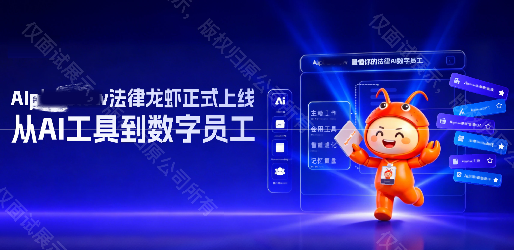
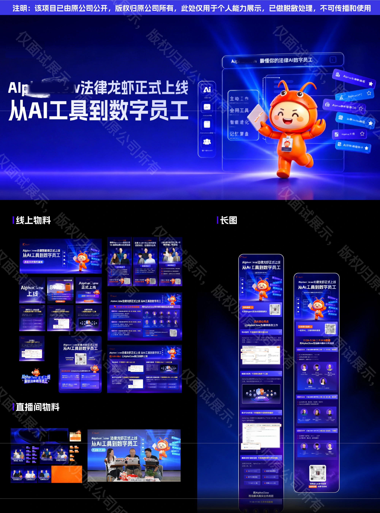
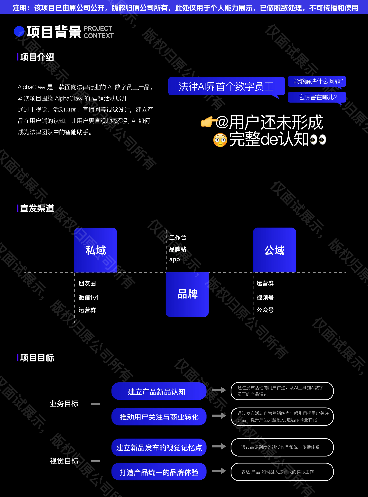
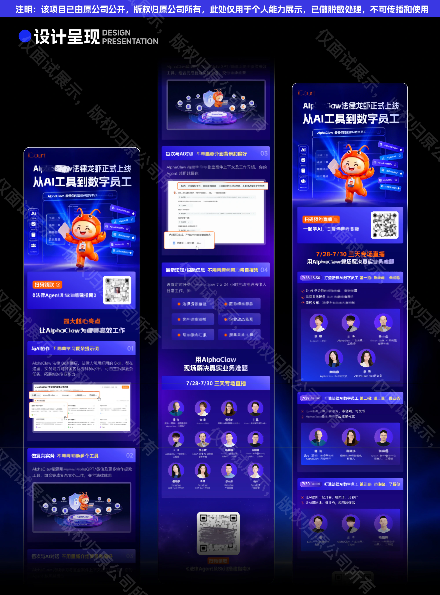
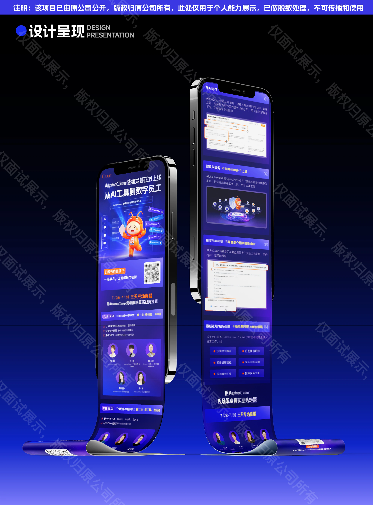
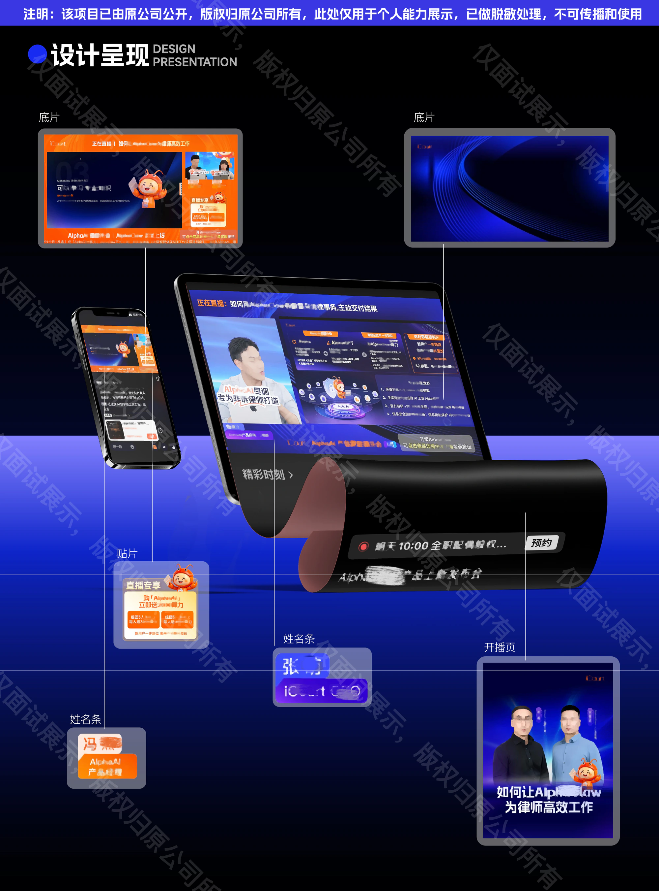
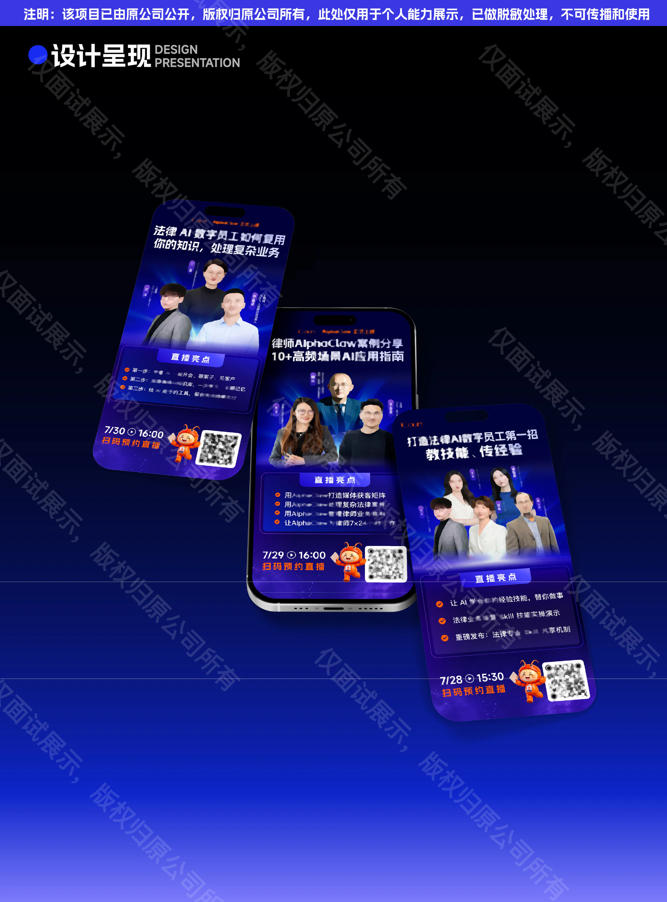
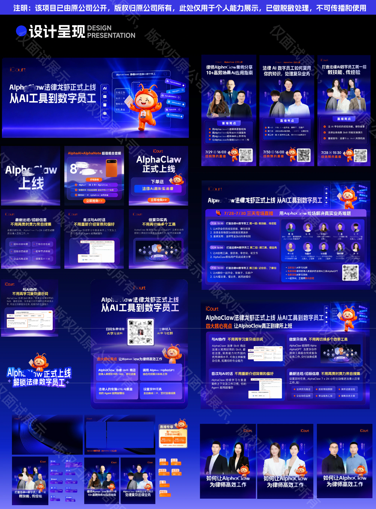
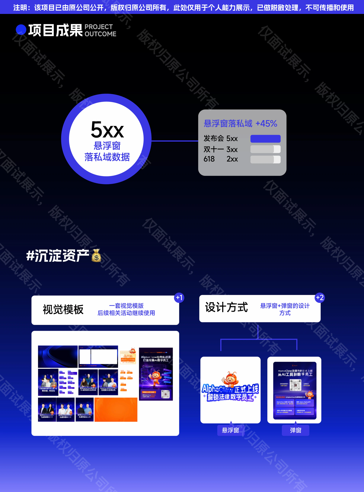

PRODUCT LAUNCH / 新品发布
AlphaClaw
正式上线发布会
从AI工具，
到数字员工。KEY VISUAL / CAMPAIGN / LIVESTREAM
发布主视觉 / 活动长图 / 直播间与线上物料探索这个项目 ↓

01 / PROJECT CONTEXT
让“数字员工”，
变成可以理解的产品体验。
AlphaClaw是一款面向法律行业的AI数字员工产品。此次正式上线发布，通过主视觉、活动页面与直播间设计，帮助用户认识产品如何成为法律团队中的智能助手。
以“从AI工具到数字员工”为传播线索，用角色、产品界面与任务信息建立视觉记忆点，并将同一套表达延展到品牌渠道、公域与私域传播。
- 项目
- AlphaClaw
正式上线发布会 - 设计内容
- 发布主视觉 · 活动长图
直播间包装 · 系列海报
悬浮窗、弹窗与线上物料


02 / DESIGN PRESENTATION
从一次发布，
延展为完整的传播体验。
以蓝紫色科技界面和橙色角色建立对比，围绕产品能力、实际任务与直播内容组织信息。通过活动长图、人物海报和直播包装，让用户在不同触点中形成连贯认知。





03 / PROJECT OUTCOME
视觉落地，
也留下可复用的方法。
从发布主视觉、直播间到线上传播物料，围绕“从 AI 工具到数字员工”建立统一的视觉表达。
项目同时沉淀一套可延续到后续活动的视觉模板，以及悬浮窗和弹窗的设计方式，将单次发布中的设计经验转化为后续可复用的素材与方法。
- 方法沉淀
- 活动视觉模板
悬浮窗与弹窗设计方式

项目版权归原公司所有，仅用于个人能力展示。全部作品图保留原有版权说明、水印及脱敏处理。